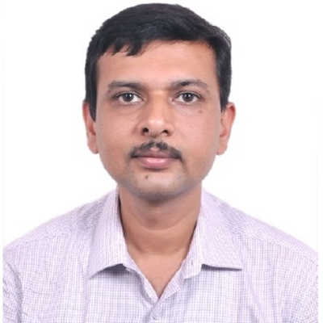
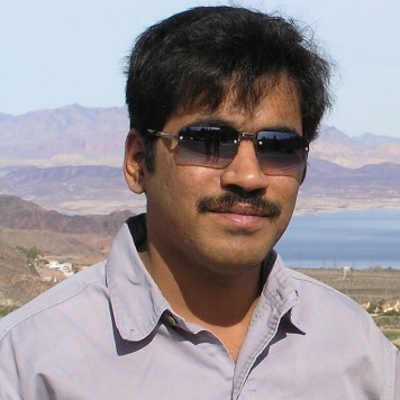

Plenary Speakers Profiles

Dilip Krishnaswamy
Ph. D. (Electrical Engineering), University of Illinois at Urbana-Champaign, 1997.Executive Leadership Certificate, Cornell University, 2016.
 Dr. D.K. is currently working as a Senior Scientist at IBM Research in Bangalore. He received the PhD degree in electrical engineering from the University of Illinois at Urbana-Champaign. He has worked as a Platform Architect at Intel, and as a Senior Staff Researcher in the Office of the Chief Scientist at Qualcomm, and has taught at the University of California, Davis. He served as the Associate Editor-in-Chief of IEEE Wireless Communications from 2009-2014. He serves as a co-chair for the IoT PIC (Professional Interest Community) at IBM Research. He chairs the committee for the annual Pat Goldberg IBM Research CS/EE/Math best paper competition (since 2015). He in an inventor on 55 granted US patents, and has published 60+ papers with 3 best paper awards. He is a BTech (electronics and communications engineering) alum of IIT Madras.
Dr. D.K. is currently working as a Senior Scientist at IBM Research in Bangalore. He received the PhD degree in electrical engineering from the University of Illinois at Urbana-Champaign. He has worked as a Platform Architect at Intel, and as a Senior Staff Researcher in the Office of the Chief Scientist at Qualcomm, and has taught at the University of California, Davis. He served as the Associate Editor-in-Chief of IEEE Wireless Communications from 2009-2014. He serves as a co-chair for the IoT PIC (Professional Interest Community) at IBM Research. He chairs the committee for the annual Pat Goldberg IBM Research CS/EE/Math best paper competition (since 2015). He in an inventor on 55 granted US patents, and has published 60+ papers with 3 best paper awards. He is a BTech (electronics and communications engineering) alum of IIT Madras.
 Jayavardhana Gubbi received the Bachelor of Engineering degree from Bangalore University in 2000, Ph.D. degree from the University of Melbourne, Australia, in 2007. For three years, he was a Research Assistant at the Indian Institute of Science (IISc), Bengaluru, where he was engaged in speech technology for Indian languages. Between 2007 and 2015, he worked as Postdoctoral Research Fellow, an Australian Postdoctoral Fellow - Industry (APDI) and Senior Research Fellow working on several industry linkage grants in biomedical signal processing, video processing and Internet of Things. He has co-authored more than 65 peer reviewed papers and filed 5 patents. He is currently a senior scientist in TCS Innovation Labs - Bengaluru.
Jayavardhana Gubbi received the Bachelor of Engineering degree from Bangalore University in 2000, Ph.D. degree from the University of Melbourne, Australia, in 2007. For three years, he was a Research Assistant at the Indian Institute of Science (IISc), Bengaluru, where he was engaged in speech technology for Indian languages. Between 2007 and 2015, he worked as Postdoctoral Research Fellow, an Australian Postdoctoral Fellow - Industry (APDI) and Senior Research Fellow working on several industry linkage grants in biomedical signal processing, video processing and Internet of Things. He has co-authored more than 65 peer reviewed papers and filed 5 patents. He is currently a senior scientist in TCS Innovation Labs - Bengaluru.

Jayavardhana Gubbi
Senior scientist in TCS Innovation LabsPhD University of Melbourne, Australia

Raghavendra Rao R
Hardware Architect, Intel Technology India Pvt Ltd, Bangalore- Three approved and four pending patent applications with USPTO at Intel Technology India Pvt. Ltd.
- Received Division level recognition for Innovation of Far-field audio technology along and for the execution of the Smart speaker customer project launched with two different voice vendors in China and US. The product bagged the best innovative product award in CES 2017.
- Authorized for defensive publication of disclosure, Alternative Powering Methodology for ECG signal Acquisition in MRI Systems, at GE Medical Systems, Bangalore. Recognized disclosures on Dynamic Link width negotiation at Dell R&D Centre and Error Detection correction and Containment Methodologies for MRI systems at GE Medical Systems
- Conducted a site wide tutorial on how usability affects product development and the tools for usability driven system design at Intel India Technology Pvt. Ltd.
- White papers on Telecom Clock Architecture in ATCA System, CompactPCI System Analysis, Dynamic link width negotiation of Serial interfaces with specific experimentation on PCI-Express, Error detection, Correction and Containment methodology implementation in MRI Systems